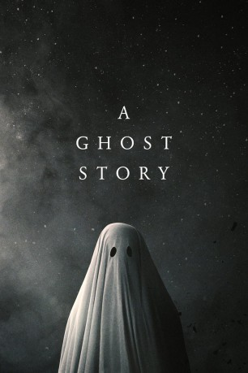

#8662 A Ghost Story
 
 IMDB-Wertung: 6.8 / 10
IMDB-Wertung: 6.8 / 10  Metascore: 84
Metascore: 84 
Ein kürzlich verstorbener Mann kehrt als Geist zu seiner trauernden Frau zurück. Er verbleibt in dem gemeinsamen Haus, um sie mit seiner Anwesenheit zu trösten und an ihrem Alltag teilzuhaben, doch stellt schnell fest, dass er in der Zwischenwelt feststeckt. Unfähig, diesen Ort wieder zu verlassen, muss er zusehen, wie seine Frau ihr Leben ohne ihn weiterlebt und ihm immer mehr entgleitet. Doch langsam gelingt es ihm, sich zu lösen, und er begibt sich auf eine kosmische Reise, auf der er sich mit den Rätseln des Lebens auseinandersetzen muss, um Frieden zu finden und herauszufinden, was es bedeutet, nach dem Tod erinnert zu werden und ein andauerndes Vermächtnis zu hinterlassen.
Jahr: 2017
Dauer: 92 Minuten
FSK: 12
Land: USA Studio: A24Tonspuren: DTS - ,
Untertitel: Deutsch,
Auflösung: 1080p (1440x1080) Größe: 5478 MB
Genre: Drama, Fantasy, Liebe
Regisseur: David Lowery
Drehbuch: David Lowery
Soundtrack: Daniel Hart
Darsteller:
 Casey Affleck als C
Casey Affleck als C Rooney Mara als M
Rooney Mara als M- McColm Cephas Jr. als Little Boy
- Kenneisha Thompson als Doctor
- Grover Coulson als Man in Wheelchair
- Liz Cardenas als Linda
- Barlow Jacobs als Gentleman Caller
- Richard Krause als Mover
- Kesha als Spirit Girl
- Will Oldham als Prognosticator
- Brea Grant als Clara
- Augustine Frizzell als Clara's Wife Who is Writing a Book
- Jonny Mars als Oversharing Man
- Bryan Pitts als Chairman
- Rob Zabrecky als Pioneer Man
- Derrick Halverson als At the Hospital
- Randy E. Aguebor als At the Hospital
- Joel David Taylor als At the Hospital
- Monalisa Amidar als At the Hospital
- CG Lewis als At the Hospital
- Kimberly Gail Williams als At the Hospital
- Tanya Foster als At the Hospital
- Giovannie Cruz als At the Hospital
- Kathy Jordan als At the Hospital
- Jordan Jett Raines als At the Party
- Juan Fiol als In the Boardroom
- Brandi Price als In the Boardroom
- David Lowery als Neighbor's Ghost (uncredited)
- Dagger Salazar als Mover
- Sonia Acevedo als Maria
- Carlos Bermudez als Carlos
- Yasmina Gutierrez als Yasmina
- Kimberly Fiddes als Making Out
- Daniel Escudero als Making Out
- Jared Kopf als Magician
- Afomia Hailemeskel als Just Wants to Dance
- Rachel Ballard als Patient Woman
- Sara Tomerlin als Pioneer Woman
- Margot Tomerlin als Pioneer Children
- Sylvie Tomerlin als Pioneer Children
- Savanna Walsh als Pioneer Children
- David Miller als At the Hospital
- Hector Escalante als At the Hospital
- Phillip Amidar als At the Hospital
- Stan Sanders als At the Hospital
- Alvis Lewis als At the Hospital
- David Fraga als At the Hospital
- Paulie Killgore als At the Hospital
- Otis Harris als At the Hospital
- Scooter Walsh als At the Hospital
Datei: X:\2017(G-M)\Ghost Story, A (2017, FSK12, 1440x1080).mkv seit 13.04.2018
Festplatte: HD 2017(A-Z)-2018(A-F)
 Es gibt insgesamt 148 Filme in der Gruppe '2017(G-M)'
Es gibt insgesamt 148 Filme in der Gruppe '2017(G-M)'